元画像
転送前変換画像(開館中毎時更新)
画像は約一日かけて転送される.
転送後受信画像
 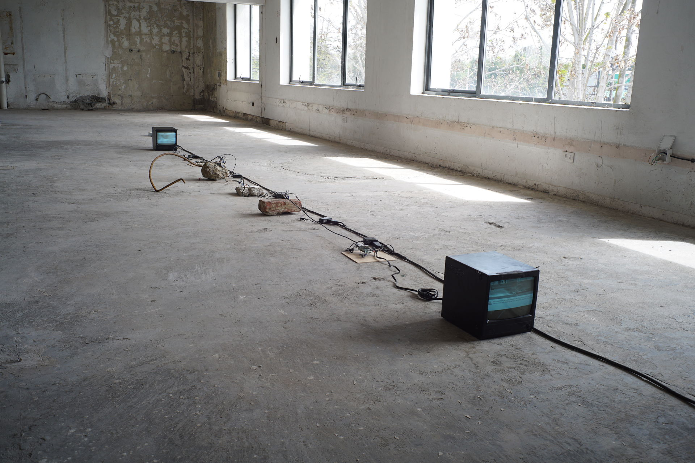
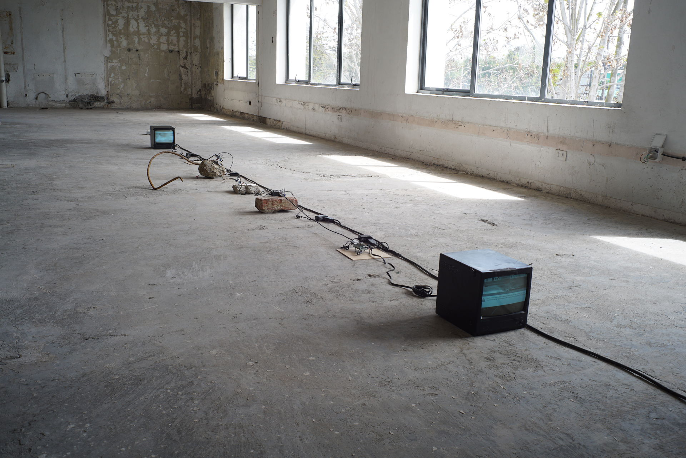
会場では、仕組みを示すため屋内にも展示された
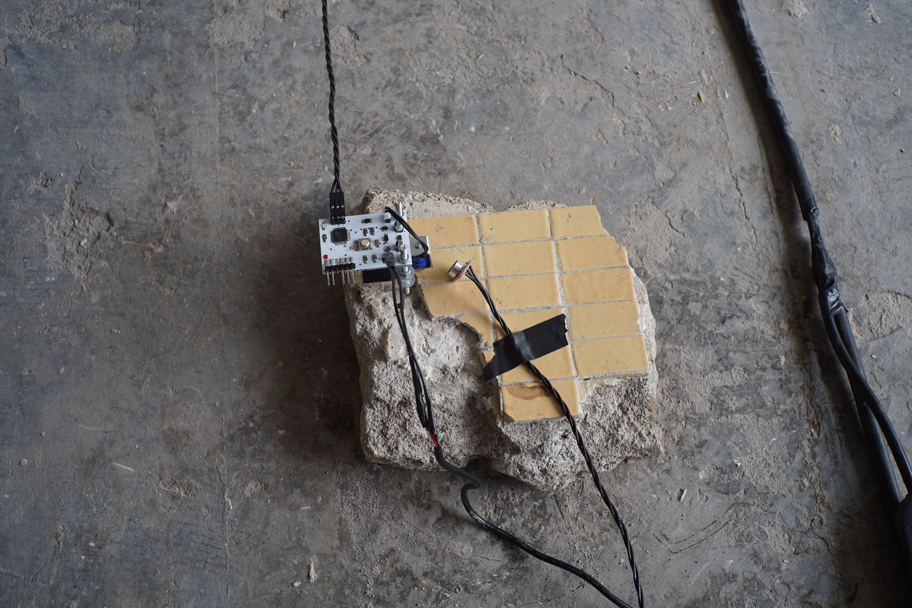 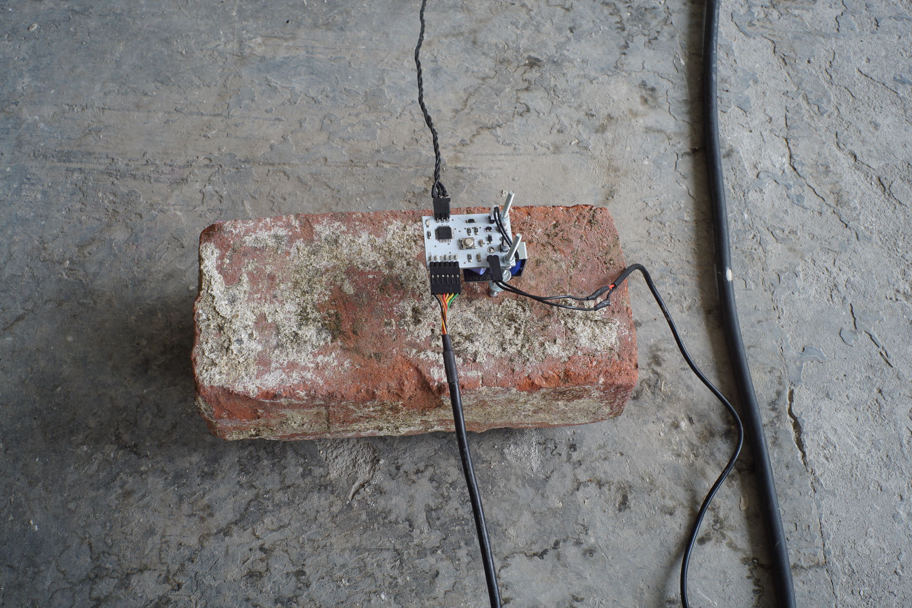 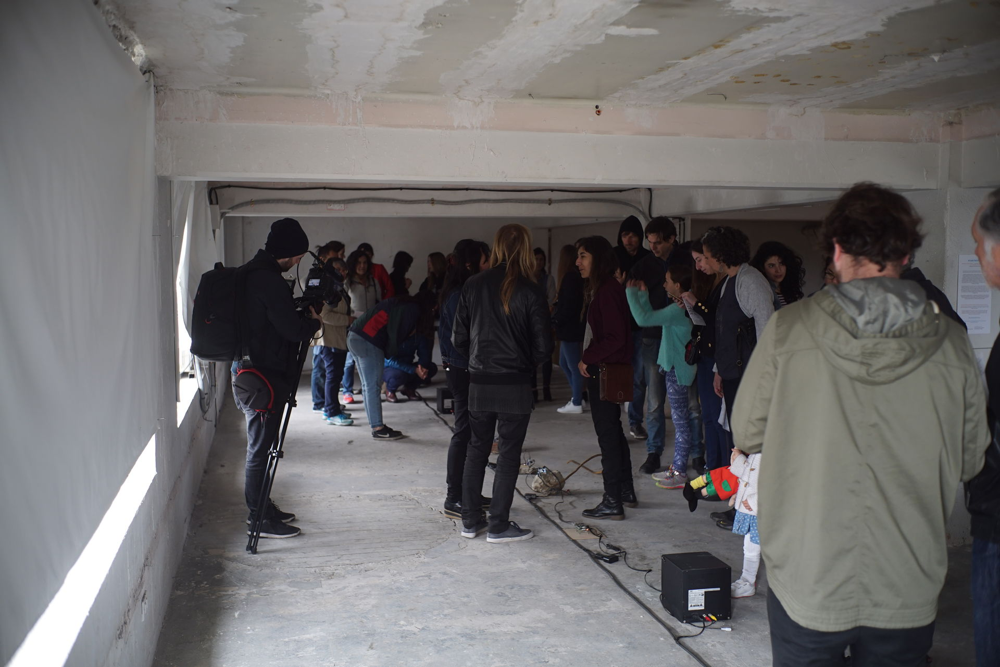 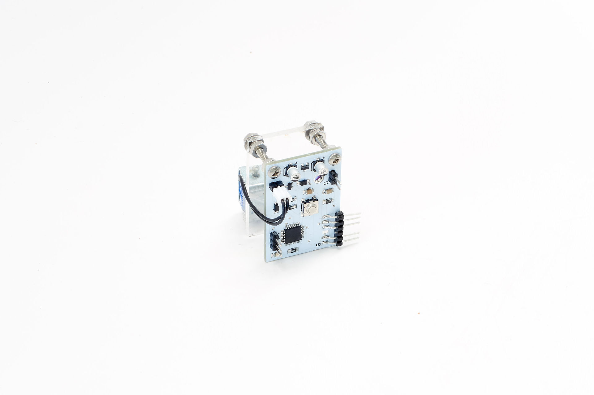Nicole L’Huillier, Thomas Sanchez Lengeling, Yasushi Sakai
自然災害というメッセージは、周りのノイズによって風化し、やがては忘れられる.
この伝聞と風化の過程を小さなをデヴァイス用いて示した.私たちが会話という空気の振動をつかって情報を送受信するように、地震そのものも『diastrofismo』（地殻変動）を通して災害という形で惑星との交信だと捉えることができる.
2010年チリ地震によって倒壊したことにより、国民にとって災害を象徴する建物となったアルト・リオの欠片の上で、デヴァイスに付けられたソレノイドの打音とそれを拾うマイク(空気の振動)によってメッセージが伝播させる.その際の通信プロトコルは周りの環境音(ノイズ)に応じてリダンダンシーを持たせた状態で変化し統計的に解釈されるいわば有機的なモールス信号である.
伝送されるメッセージの内容はその倒壊した様相を写した画像データであり、それがチリ・ビエンナーレ会期中に毎日この楽器を通じて情報として繰り返し交信される.
しかしこのデヴァイスの実装とプロトコルは完全ではなく、一定以上の雑音はメッセージの中に取り込まれ、元のメッセージが改変してしまう.またマテリアルも何度も叩かれることによって磨耗し打音が変化する事で、元の情報が変わる.
環境音によって言語形式が変わり、時には誤謬が含まれるメッセージが変質していくメディアを制作することで、日々のノイズによって忘れられる災害の集団としての経験とを重ね合わせた.
作品展示の性質上当該プロトコルを使った情報復元率を下げたが、IoTデヴァイスが普及するにつれて人間の可聴周波数にて情報を交信する方法として研究が続けられている.これは例えば自動運転車が歩行者（人間）に進む方向を知らせたり、あるいは逆に歩行者側が周りのインフラと交信する方法として利用できる.
元画像
転送前変換画像(開館中毎時更新)
画像は約一日かけて転送される.
転送後受信画像
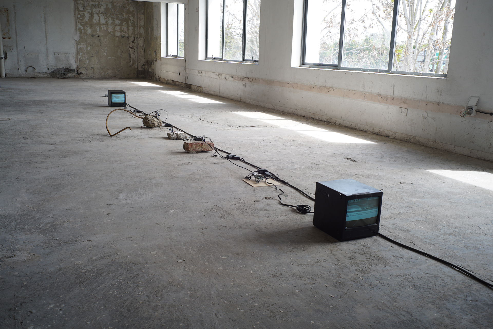
会場では、仕組みを示すため屋内にも展示された
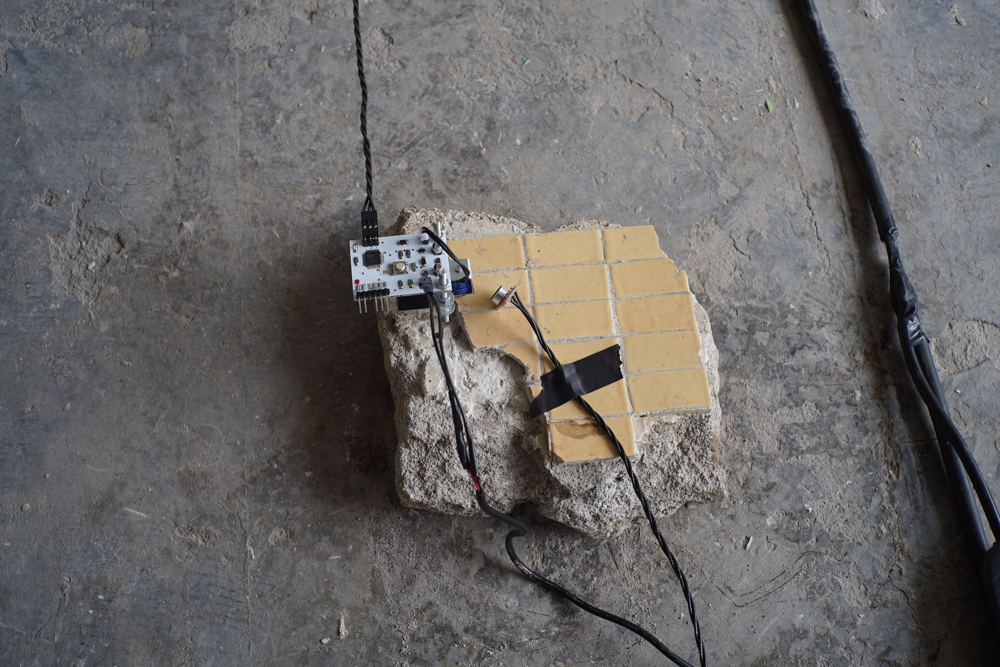 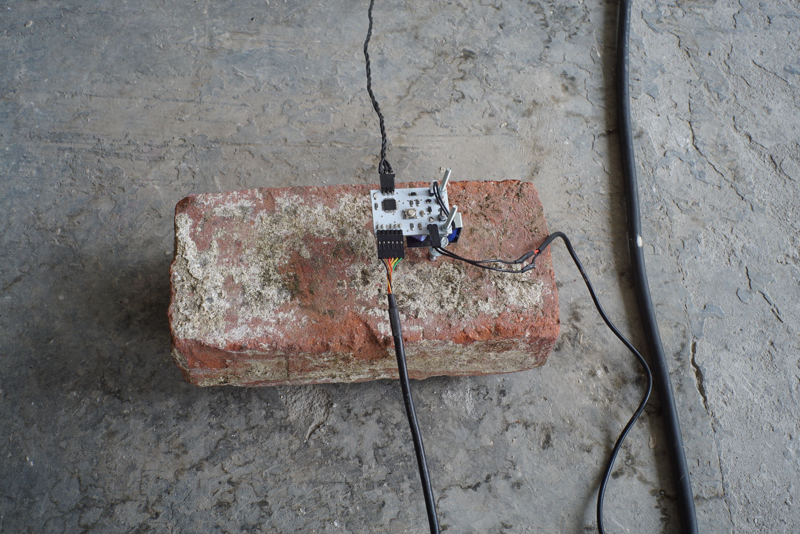 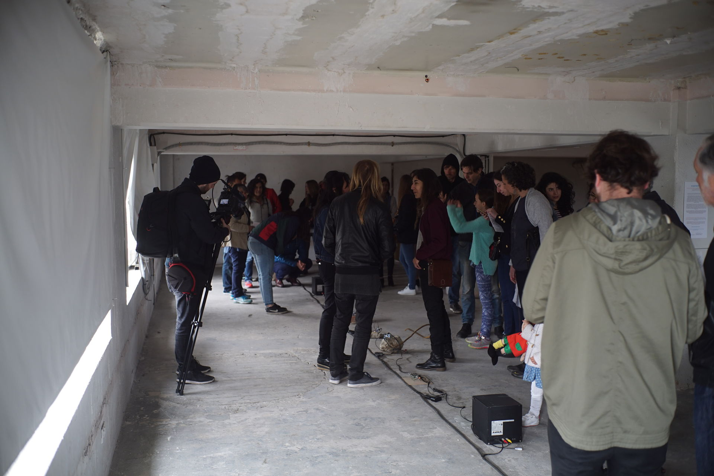 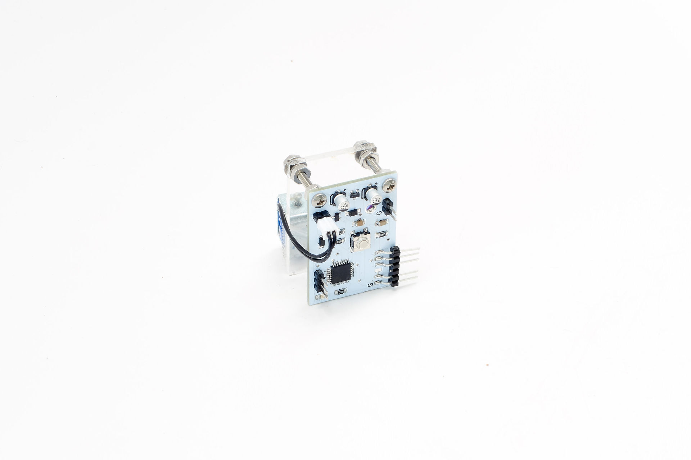